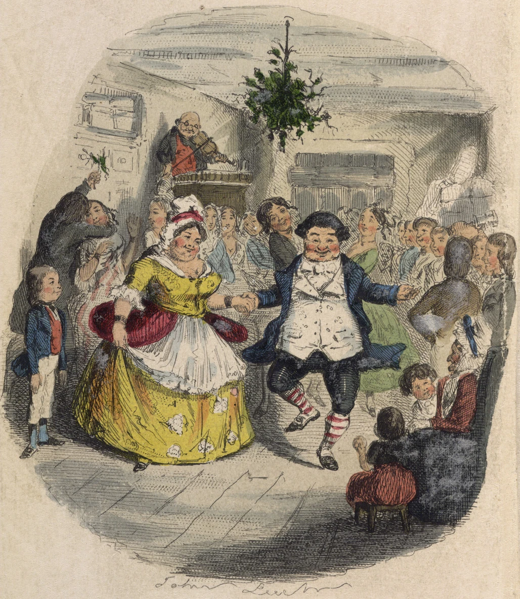
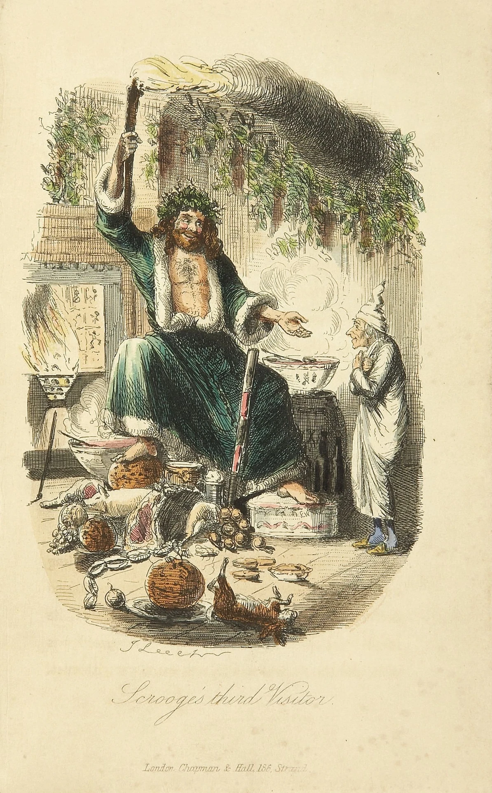

아직 펼치지 않은 카드
아직 펼치지 않은 카드
겨울밤에 읽는 이야기 · 1크리스마스 캐럴구두쇠 노인이 하룻밤 사이에 다른 사람이 되었어요. 무엇이 그를 바꿨을까요?욕심쟁이 할아버지가 하룻밤 만에 착한 할아버지가 됐대! 무슨 일이 있었을까?
1843년 · 성탄 전야영국 런던 · 디킨스의 『크리스마스 캐럴』
크리스마스 캐럴
1843년 영국의 소설가 찰스 디킨스(Charles Dickens)가 쓴 이야기예요. 런던의 늙은 구두쇠 스크루지는 크리스마스를 “허튼소리”라고 불러요. 어느 성탄 전야, 죽은 동업자의 유령과 세 유령이 차례로 찾아와 그의 지난날과 지금과 앞날을 보여 줘요. 그 하룻밤을 책의 차례대로 따라가고, 한가운데에서는 서기 밥 크래칫네 성탄 식탁을 직접 차려 보세요.
아주 옛날 영국 이야기야. 욕심쟁이 스크루지 할아버지한테 성탄 전날 밤 유령 넷이 차례로 찾아왔대. 할아버지는 그 밤에 무엇을 봤을까? 가난한 밥 아저씨네 성탄 식탁도 같이 차려 보자.
검수 전 시안이에요(기준서 1판 보탬 11 · 2026-11-22 줄거리 보강과 재벌). 소설 속 장면은 디킨스의 손 원고와 책의 글을 따랐고, 책 속 대사는 이 안내서가 우리말로 옮겼어요. 부엌 무대는 이 안내서가 그렸어요. 상상은 ‘눈 감고 상상해 보기’에만 썼어요.
시안 확인용카드 단계 미리 보기
1
성탄 전야의 구두쇠
이야기는 이렇게 시작해요. “말리는 죽었다. 이것부터 말해 두자.” 이걸 분명히 해 둬야 놀라운 일이 일어날 수 있대요. 말리(Marley)는 구두쇠 에버니저 스크루지(Scrooge)의 동업자로, 7년 전 성탄 전야에 세상을 떠났어요.
스크루지는 간판의 ‘말리’ 이름을 7년이 지나도록 지우지 않았어요. 누가 자기를 말리라고 불러도 대답했어요. 그에게는 아무래도 좋았거든요.
성탄 전야, 춥고 안개 낀 날이에요. 사무실에서 서기(장부를 적는 직원) 밥 크래칫은 석탄 한 덩이만 한 불 곁에서 일해요. 조카 프레드가 들어와 “즐거운 성탄이에요, 삼촌!” 하고 외치자, 스크루지는 “흥, 허튼소리!” 하고 대답해요. 내일 저녁을 함께 먹자는 말도 거절해요.
이어서 가난한 사람들을 도울 돈을 모으러 신사 둘이 와요. 스크루지는 되물어요. “감옥은 없소? 구빈원은요?” 가난하면 그런 데 가면 된다는 말이에요. 구빈원은 가난한 사람에게 일부러 고된 일을 시키던 곳이었어요. 거기 가느니 죽겠다는 사람도 많다고 하자, 스크루지는 그럼 죽어서 남아도는 인구나 줄이라고 해요.
문을 닫을 때, 스크루지는 밥에게 마지못해 성탄 하루를 쉬게 해 줘요. 그날 밤, 감기 기운에 혼자 죽을 먹고 있는 방으로 쇠사슬을 끄는 말리의 유령이 들어와요. 사슬에는 돈 상자와 자물쇠, 장부, 쇠 돈지갑이 엮여 있어요.

“나는 살면서 내가 만든 사슬을 차고 있네.”
『크리스마스 캐럴』 1장, 말리의 유령 · 이 안내서가 옮김
말리는 뉘우쳐요. 살면서 한 장사는 바다의 물 한 방울이었고, 정말 자기 일은 사람들이었다고요. 그리고 스크루지에게는 아직 이 운명을 피할 기회와 희망이 있대요. 세 유령이 사흘 밤에 걸쳐 찾아올 거래요. 첫째 유령은 시계 종이 새벽 한 시를 칠 때 와요.
스크루지 할아버지는 돈만 아는 구두쇠야. “즐거운 성탄!” 하고 인사해도 “흥, 허튼소리!” 한대. 그날 밤, 쇠사슬을 칭칭 감은 유령이 나타났어!
물어보기말리 유령은 왜 무거운 사슬을 끌고 다닐까?
2
과거의 유령
시계가 한 시를 치자 첫째 유령이 와요. 아이 같기도 하고 노인 같기도 한 모습이에요. 머리에서는 맑은 빛이 솟고, 옆구리에는 그 빛을 덮어 끌 수 있는 커다란 고깔모자를 끼고 있어요. 유령은 자기가 ‘지나간 성탄의 유령’이라며, 스크루지의 지난날을 보여 줘요.
먼저 성탄에도 집에 가지 못하고 학교에 홀로 남은 소년이 보여요. 어린 스크루지예요. 그 모습에 스크루지는 울어요. 다른 해의 성탄에는 여동생 팬이 데리러 와요. “아버지가 전보다 훨씬 다정해지셔서, 집이 천국 같아!”
다음은 스크루지가 젊은 날 일을 배우던 페지윅(Fezziwig) 씨의 가게예요. 성탄 전야, 페지윅 씨는 “오늘 밤은 일 끝!” 하고 외쳐요. 가게를 말끔히 치우고, 바이올린 켜는 사람을 불러 무도회를 열어요. 페지윅 씨는 부인과 함께 춤을 추고, 젊은 스크루지도 동료 딕과 함께 그 자리에 있어요.

“페지윅 씨가 주는 행복은, 큰돈을 들인 것 못지않게 크지요.”
『크리스마스 캐럴』 2장, 젊은 날의 사장 페지윅을 두고 스크루지가 한 말 · 이 안내서가 옮김
그 말을 하고 나서, 스크루지는 문득 자기 서기 밥에게 한두 마디 해 주고 싶다고 말해요.
이번에는 조금 나이 든 스크루지예요. 약혼녀 벨이 이별을 말해요. 당신은 세상을 너무 두려워해서, 좋은 꿈들이 하나씩 떨어져 나가고 돈벌이만 남았다고요. 황금이라는 우상이 자기 자리를 차지했대요.
이어서 유령은 벨이 꾸린 집을 보여 줘요. 아이들로 왁자지껄한 따뜻한 집이에요. 벨의 남편이 그날 오후 스크루지를 보았대요. 동업자 말리는 죽어 가는데, 사무실에 홀로 앉아 있더래요. 이 세상에 아주 혼자더라고요. “더는 보여 주지 마시오!” 스크루지는 고깔모자를 유령에게 눌러 씌워 빛을 덮어요.
첫째 유령은 스크루지 할아버지의 어린 시절을 보여 줬어. 성탄에도 혼자 학교에 남은 아이였대.
물어보기어린 스크루지를 만나면, 너는 뭐라고 말해 주고 싶어?
3
현재의 유령
시계가 다시 한 시를 쳐요. 옆방에서 붉은 빛이 새어 나오고, 누군가 그의 이름을 부르며 들어오라고 해요. 벽과 천장은 호랑가시나무를 비롯한 푸른 잎으로 덮였고, 바닥에는 칠면조와 거위, 푸딩과 과일이 산처럼 쌓여 있어요. 그 곁에 초록 옷을 입은 쾌활한 거인이 횃불을 들고 앉아 있어요. ‘지금 성탄의 유령’이에요. 이 유령의 삶은 오늘 밤 자정까지래요.

유령은 스크루지를 성탄 날 아침의 런던 거리로 데려가요. 저녁거리를 들고 빵집으로 가는 가난한 사람들을 보자, 유령은 횃불을 기울여 그 위에 향을 뿌려 복을 빌어요. 그다음 들른 곳은 서기 밥 크래칫의 집이에요.
밥은 일주일에 15실링을 받아요. 실링은 그때 영국 돈의 단위로, 이 책 한 권 값이 5실링이었어요. 한 주 내내 일해 책 세 권 값을 버는 셈이에요. 그 돈으로 아이 여섯을 키우는 작은 집에도, 유령은 복을 빌어 줘요. 교회에서 돌아온 밥의 어깨에는 어린 아들 꼬마 팀이 타고 있어요. 팀은 작은 목발을 짚고, 다리는 쇠틀로 받치고 다녀요.
팀은 교회에서 사람들이 자기를 보았으면 했대요. 다리를 저는 자기를 보면, 성탄 날에 다리 저는 사람을 걷게 하고 눈먼 사람을 보게 하신 예수님을 떠올릴 수 있을 테니까요(마태복음 11장 5절).
둘째 유령은 먹을 걸 산처럼 쌓아 놓은 커다란 거인이야. 횃불을 흔들어 가난한 집에 복을 빌어 줘.
물어보기유령의 횃불에서는 무엇이 뿌려졌을 것 같아?
4
크래칫네 식탁
이제 크래칫네 식구들이 저마다 일을 맡아 성탄 식탁을 차려요. 아래 무대에 책에 적힌 차례대로 놓아 보세요. 차례를 몰라도 괜찮아요. 틀리면 책의 차례를 알려 줘요.
식탁에 둘러앉자 밥이 잔을 들어요. “얘들아, 우리 모두 즐거운 성탄! 하나님, 우리에게 복을 주세요!” 맨 마지막에 꼬마 팀이 말해요. “하나님, 우리 모두에게 복을 주세요!”
밥은 스크루지를 위해서도 잔을 들어요. “이 잔치를 차려 주신 스크루지 씨를 위하여!” 그에게서 받는 봉급으로 차린 잔치라는 뜻이에요. 크래칫 부인은 얼굴이 붉어지도록 화를 내요. 그런 인색하고 차가운 사람을! 그래도 남편과 성탄 날을 위해서는 잔을 들어요.
스크루지가 꼬마 팀은 살 수 있겠느냐고 묻자, 유령은 가난한 난롯가에 빈자리 하나와, 주인 없이 고이 간직된 목발이 보인대요. 앞날이 바뀌지 않으면 그 아이는 죽을 거라며, 스크루지의 말을 그대로 돌려줘요. 죽어서 남아도는 인구나 줄이라던 그 말이요. 스크루지는 부끄러워 고개를 숙여요.
유령은 조카 프레드의 집에도 데려가요. 손님들은 스크루지 이야기에 웃음을 터뜨려요. ‘예’와 ‘아니요’만 듣고 맞히는 수수께끼 놀이에서도, ‘런던에 사는 으르렁거리는 짐승’의 답은 스크루지 삼촌이었어요. 그래도 프레드는 잔을 들어요. “스크루지 삼촌을 위하여!”
성탄 날 하루를 다 돌아보고 자정이 가까워지자, 유령의 옷자락 아래에서 비쩍 마르고 누더기를 걸친 두 아이가 나와요. “이 사내아이는 무지, 이 여자아이는 궁핍이란다.” 스크루지가 저 아이들이 기댈 곳은 없느냐고 묻자, 유령은 스크루지의 말을 또 돌려줘요. “감옥은 없소? 구빈원은요?” 자정 종이 울리고, 검은 옷의 유령이 다가와요.
식탁보, 거위, 감자, 푸딩, 난롯불, 잔! 하나씩 차려 보자.
물어보기불붙은 푸딩이 들어오면, 너는 뭐라고 외칠 것 같아?
5
미래의 유령, 그리고 아침
셋째 유령은 검은 옷으로 머리부터 발끝까지 덮었어요. 한마디 말도 없이 손으로 가리키기만 해요. 앞으로 올 성탄의 유령이에요.
유령이 보여 준 앞날에서 누군가 죽었어요. 상인들은 점심을 준다면 장례식에 가 주겠다며 웃고, 그 집 청소부는 묻을 때 입혀 둔 셔츠까지 벗겨 와 고물상에 팔아요. 이 죽음에 마음이 움직인 사람은, 빚 독촉에서 풀려 한숨 돌린 젊은 부부뿐이에요.
크래칫네 집은 너무 조용해요. 꼬마 팀이 보이지 않아요. 아버지 밥이 울음을 터뜨려요. “내 아기, 내 작은 아기!” 마지막으로 유령은 돌보는 이 없는 무덤을 가리켜요. 비석의 이름은 에버니저 스크루지였어요.

스크루지는 유령의 손을 붙잡고 빌어요. “나는 예전의 내가 아니에요. 성탄의 마음을 품고, 한 해 내내 지키려 애쓰겠어요.” 그러자 유령이 쪼그라들어 침대 기둥으로 바뀌었어요. 자기 침대의 기둥이었어요.
창을 열고 지나가는 소년에게 오늘이 무슨 날이냐고 묻자, “오늘요? 성탄절이잖아요!” 말리는 사흘 밤이라 했는데, 유령들이 하룻밤에 다 해 준 거예요.
스크루지는 가금 가게에 걸린 가장 큰 칠면조를 사서, 보낸 이를 밝히지 않고 크래칫네로 보내요. 꼬마 팀보다 두 배나 큰 칠면조예요. 조카네 문 앞에서는 열두 번이나 서성인 끝에 문을 두드려요. “삼촌이다. 저녁 먹으러 왔단다. 들어가도 되겠니, 프레드?”
이튿날, 18분 반 늦게 들어온 밥에게 스크루지는 일부러 무섭게 호통을 치더니 말해요. “그래서 말인데, 자네 봉급을 올려 줄 참이네!”
그는 말한 것보다 더 많이 지켰어요. 죽지 않은 꼬마 팀에게는 아버지나 다름없는 사람이 되었어요. 책은 꼬마 팀의 그 말로 끝나요. “그리하여 꼬마 팀이 말한 대로, 하나님, 우리 모두에게 복을 주세요!”
셋째 유령은 말없이 손으로만 가리켜. 그 끝에 스크루지 할아버지 이름이 적힌 무덤이 있었어. 그리고 성탄 아침, 할아버지는 밥 아저씨네로 커다란 칠면조를 몰래 보냈어. 꼬마 팀은 죽지 않았대!
물어보기큰 칠면조가 도착했을 때, 꼬마 팀네 식구들은 어떤 얼굴이었을까?
눈 감고 상상해 보기
좁은 부엌에 푸딩 찌는 김이 가득해요. 음식점과 과자 가게가 나란히 붙은 듯한 냄새가 퍼져요. 파란 불꽃을 두른 푸딩이 들어오는 순간 모두 숨을 멈춰요. 난롯불에서 군밤이 탁탁 튀고, 창밖에는 눈이 내리기 시작해요.
눈을 감아 봐. 부엌에 김이 모락모락, 푸딩에 파란 불이 활활. 난로에서 군밤이 탁탁 튀어!
나의 자리
밥 크래칫은 그 식탁에서 스크루지를 위해서도 잔을 들었고, 부인은 망설였어요. 꼬마 팀이 말한 ‘우리 모두’에, 나라면 누구까지 넣을 수 있을까요?
꼬마 팀은 ‘우리 모두에게 복을!’ 하고 말했어. 너라면 그 ‘모두’에 누구누구를 넣고 싶어?
마음에 닿는 한 줄을 고르거나 직접 써 보세요. 한 줄을 남기면 이 자리의 도장이 찍혀요. 이 기기에만 저장돼요.
더 깊이
이야기를 보다 궁금해질 만한 것들이에요. 답을 읽거나 짧은 영화로 보세요.
“감옥은 없소? 구빈원은요?” 이 말은 왜 두 번 나와요?
스크루지는 무엇 때문에 하룻밤 만에 달라졌을까요?
뒷이야기
아직 펼치지 않은 이야기예요. 누르면 이야기가 펼쳐지고 색이 돌아와요. 더 알고 싶으면 근거를 따라가 보세요.
다 펼치면, 다음에 오실 때 새 이야기가 찾아와요.
오늘의 뒷이야기는 여기까지예요. 다음에 오시면 새 이야기가 기다리고 있어요.
펼친 뒷이야기 · 누르면 다시 볼 수 있어요
더 찾아보기
기록마다 다른 점
나온 날 모건 도서관은 1843년 12월 19일, 글래스고 대학 도서관은 12월 17일이라고 적어요.
얼마나 빨리 팔렸나 포스터의 전기는 첫 6,000부가 나온 첫날에 다 팔렸다고 적었고, 글래스고 대학 도서관은 성탄까지, 히스토리 투데이는 성탄 전야까지 다 팔렸다고 적어요.
둘째 판 히스토리 투데이는 1월 2일까지 둘째 판 3,000부가 나왔다고 하고, 글래스고 대학 도서관은 둘째 판 2,000부가 1월 6일까지 팔렸다고 적어요.
마지막 문장 손 원고에는 ‘God Bless Us Every One!’으로, 인쇄된 책에는 ‘God bless Us, Every One!’으로 적혀 있어요.
원고 쪽수 모건 도서관의 해설은 66쪽짜리 원고라고 하고, 같은 목록의 묶음 설명에는 68쪽이라고 적어요.
원고와 그림을 직접 보기
확인한 날 · 2026년 11월 18일 · 바뀌기 쉬운 정보라 정기적으로 다시 확인해요
뉴욕 모건 도서관은 이 손 원고를 누리집에서 한 쪽씩 넘겨 볼 수 있게 열어 두었어요. 쪽마다 옮겨 적은 글도 함께 있어요. 크래칫네 식탁은 36~40쪽이에요.
모건 도서관은 해마다 성탄 무렵 이 원고를 펼쳐 전시하고, 해마다 한 쪽씩 넘겨요. 전시 때는 미리 확인해 주세요.
책의 차례대로 금박
3장에 적힌 차례(식탁보부터 잔 셋까지)대로 크래칫네 식탁을 다 차리면 카드에 금박이 입혀져요.
식탁보 → 거위 → 감자와 사과 소스 → 불붙인 푸딩 → 난롯불과 군밤 → 잔 셋 차례로 놓기
아이와 함께 채색
아이와 함께 ‘영화처럼 보기’를 끝까지 보면 카드가 채색돼요.
아이와 함께 ‘영화처럼 보기’를 끝까지 보기
근거 보기 (40)
- 모건 도서관 목록: 『크리스마스 캐럴』 손 원고(MA 97) — 6주 만에 씀, 66쪽, 하나뿐인 원고, 12월 19일 출간, 미턴에게 선물, 표제지의 ‘My own, and only, MS of the Book’
- 모건 도서관: 손 원고 쪽마다 옮겨 적은 글 — 36쪽(밥의 15실링·방 네 칸 집·식탁보·빵집 앞 거위 냄새)
- 모건 도서관: 손 원고 37쪽 — 교회에서 돌아온 밥과 팀(어깨 위·목발·쇠틀), 팀이 교회에서 한 바람, 주전자, 거위를 가지러 감
- 모건 도서관: 손 원고 38쪽 — 대포알 같은 푸딩, 브랜디 불꽃, 호랑가시나무
- 모건 도서관: 손 원고 39쪽 — 식탁 치우기, 사과·오렌지·군밤, 잔 셋, 밥의 건배와 팀의 말, 빈자리와 목발
- 모건 도서관: 손 원고 40쪽 — 크래칫 부인의 건배
- 모건 도서관: 손 원고 66쪽 — 책의 마지막 문장(손 원고의 글자 모양)
- 모건 도서관: 손 원고 17쪽 — 2장이 시작되는 쪽(사진 속 쪽)
- 모건 도서관 전시: 2025~26 『크리스마스 캐럴』 — 1843년 10월부터 6주, 붉은 가죽 제본, 해마다 한 쪽씩 넘김
- 존 포스터, 『찰스 디킨스의 생애』 1권(1872, 1876 판) 4부 1~2장 — 쓰기 시작한 때와 끝낸 때, 울고 웃으며 밤거리를 걸은 일, 첫날의 판매
- Lit2Go(사우스플로리다 대학): 『크리스마스 캐럴』 1장 — 추운 날, 석탄 한 덩이 불, “Bah! Humbug!”, 7년 전 이날 밤, 말리의 사슬
- Lit2Go: 3장 — 크래칫네 식탁의 차례
- Lit2Go: 4장 — 검은 옷의 유령, 무덤의 이름, 성탄을 한 해 내내 지키겠다는 말
- Lit2Go: 5장 — 성탄 날 아침, 팀보다 두 배 큰 칠면조, 봉급, 둘째 아버지, 마지막 문장
- 글래스고 대학 도서관: 이달의 책(1999년 12월) — 12월 17일, 성탄까지 6,000부, 리치의 판화 여덟 점, 5실링
- 잉글리시 헤리티지(샘 빌턴, 2025): 화덕이 없으면 거위를 빵집에 맡겨 구움
- 케임브리지 대학 도서관 특별 장서 블로그(2016): 『크리스마스 캐럴』 그림의 역사
- 위키미디어 공용: 손 원고 사진 정보(CC0)
- Lit2Go: 1장 — 첫 문장, 스크루지와 말리 간판, 길에서 인사하는 이 없음, 조카의 초대와 거절, 두 신사와 “감옥은 없소? 구빈원은요?”, 남아도는 인구, 마지못해 준 성탄 하루, 문 두드리개의 얼굴, 죽 냄비, 사슬의 물건들, 기회와 희망, 종이 한 번 울릴 때
- Lit2Go: 2장 — 아이 같고 노인 같은 유령과 머리의 빛·덮개 모자, 지나간 성탄의 유령(“Your past”), 학교에 홀로 남은 소년과 눈물, 여동생 팬, 페지윅의 성탄 전야 무도회와 바이올린, 큰돈을 들인 것 못지않은 행복, 서기에게 한두 마디, 상복의 약혼녀와 황금 우상, 벨의 집과 “Quite alone in the world”, “Show me no more!”, 모자 아래로 새는 빛
- Lit2Go: 3장 — 옆방의 붉은 빛과 이름 부르는 목소리, 푸른 잎으로 덮인 벽, 초록 옷의 거인과 쌓인 음식, 빵집으로 가는 저녁거리에 뿌린 횃불, 팀의 빈자리와 목발, 남아도는 인구를 돌려줌, 조카의 잔치와 ‘예, 아니요’ 놀이, 무지와 궁핍, 기댈 곳, 자정의 종
- Lit2Go: 4장 — 점심을 준다면 가겠다는 상인, 청소부와 고물상 조, 침대 휘장·담요·벗겨 온 셔츠, 홀로 누운 죽은 이, 빚에서 벗어나 기뻐하는 부부, 조용한 크래칫네와 “My little, little child!”, 돌보지 않은 무덤의 이름, 세 유령의 가르침을 닫지 않겠다는 말, 침대 기둥
- Lit2Go: 5장 — 깃털처럼 가볍고 천사처럼 행복하고 학교 아이처럼 즐겁다, “What’s to-day?” “CHRISTMAS DAY”, 하룻밤, 보낸 이를 숨긴 상품 칠면조와 팀의 두 배, 밀린 몫이 든 기부, 조카네 저녁, 18분 반 늦은 밥과 봉급, 말보다 더 지킴, 둘째 아버지, 웃게 둠, 성탄을 잘 지킬 줄 아는 사람
- 위키미디어 공용: 「페지윅 씨의 무도회」(1843년 초판 맨 앞 그림, 영국 도서관 소장본 사진 · 퍼블릭 도메인)
- 위키미디어 공용: 「스크루지의 셋째 손님」(1843년 초판 · 퍼블릭 도메인)
- 영국 국립기록원 교육 자료 「1834년 구빈법」 — 도움을 받으려면 대개 구빈원에 들어가야 함, 일부러 고되게, 식구가 갈라짐, 돌 깨기와 밧줄 풀기
- 프린스턴 대학 코츤 도서관 블로그(2016) — 1843년 9월 16일 디킨스가 버뎃쿠츠에게 쓴 편지, 빈민 학교(아마 필드 레인), 무너질 듯한 방 셋, 헐벗은 아이 일흔 명쯤, 감옥이나 무덤으로 갈 아이들
- 히스토리 투데이: 『크리스마스 캐럴』이 나온 날 — 1843년 2월 아동 노동 조사 보고서, 3월의 소책자 계획과 ‘쇠망치’, 9월 새프런 힐 근처 빈민 학교, 밤거리 15~20마일, 6,000부와 둘째 판
- 찰스 디킨스 박물관 블로그 「마셜시 감옥의 쇠창살」 — 1824년 2월 아버지의 빚과 감옥, 열두 살의 구두약 공장, 포스터와 아내에게만 털어놓음
- 필립 앨링엄, 빅토리아 웹: 『크리스마스 캐럴』 — 첫 6,000부 수입 230파운드, 해적판 소송 비용 700파운드, 팀 구절은 손 원고에 없음
- 필립 앨링엄, 빅토리아 웹: 리치의 다섯째 그림 — 빈 칼집과 오렌지, 성경 그림 타일, 큰 케이크 발판
- 매슈 윌스, JSTOR 데일리(2019): 『크리스마스 캐럴』 해적판 — 2펜스 주간지 『팔리의 그림 문고』, 1844년 1월 6일 호
- 버밍엄 시민회 파란 명판: 찰스 디킨스 — 1853년 12월 27일 첫 낭독, 2,000명 가까이, 일하는 사람들의 밤
- 모건 도서관: 손 원고 65쪽 — ‘He did it all, and infinitely more.’ 바로 뒤 문장
- 인터넷 아카이브: 1843년 첫 책의 복제본(1922년, 세실 파머) — 5장의 팀 구절
- 빅토리아 앨버트 박물관: 세계 첫 성탄 카드(1843년 12월)
- 메리엄-웹스터 사전: stave(노래의 한 절) · scrooge(구두쇠, 1899년)
- 도널드 루이스, 「꼬마 팀은 무엇이 아팠을까?」(미국 소아병 학회지, 1992) 요약 — 병은 수수께끼, 그때의 치료, 원위 신세뇨관 산증이라는 짐작
- 필립 앨링엄, 빅토리아 웹: 리치의 「말리의 유령」 — 겁에 질린 얼굴의 촛불, 땋은 머리, 죽 그릇
- 필립 앨링엄, 빅토리아 웹: 리치의 맨 앞 그림 「페지윅 씨의 무도회」 — 가장 좋았던 때의 기억, 페지윅 부부, 겨우살이 아래의 젊은 남녀, 안경 쓴 바이올린 연주자
그림·사진·소리 출처
- 사진: Jack1956 · CC0 · 위키미디어 공용
- 그림: 존 리치 · 퍼블릭 도메인 · 위키미디어 공용
- 그림: 존 리치 · 영국 도서관 소장본 · 퍼블릭 도메인 · 위키미디어 공용
- 그림: 존 리치 · 퍼블릭 도메인 · 위키미디어 공용
- 그림: 존 리치 · 퍼블릭 도메인 · 위키미디어 공용
- 그림: 존 리치 · 퍼블릭 도메인 · 위키미디어 공용
- 1843년 초판 · 퍼블릭 도메인 · 사진: Heritage Auctions · 위키미디어 공용
- 크래칫네 부엌 무대: 이 안내서가 그린 그림 · 『크리스마스 캐럴』 3장(디킨스 손 원고 36~40쪽)을 바탕으로
‘처음 만나는 기독교 문화’의 깊은 카드예요. 실제 인물의 사진은 쓰지 않았어요. 카드 단계와 남긴 글은 이 기기에만 저장돼요.